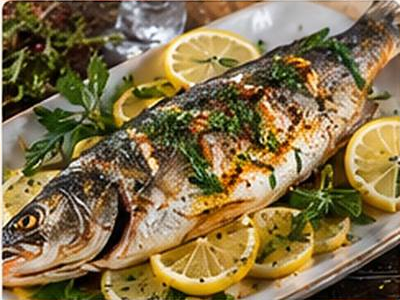
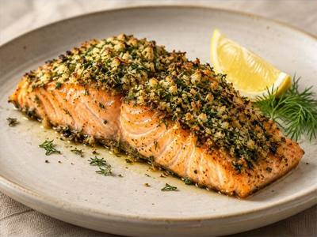
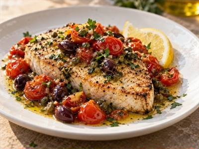
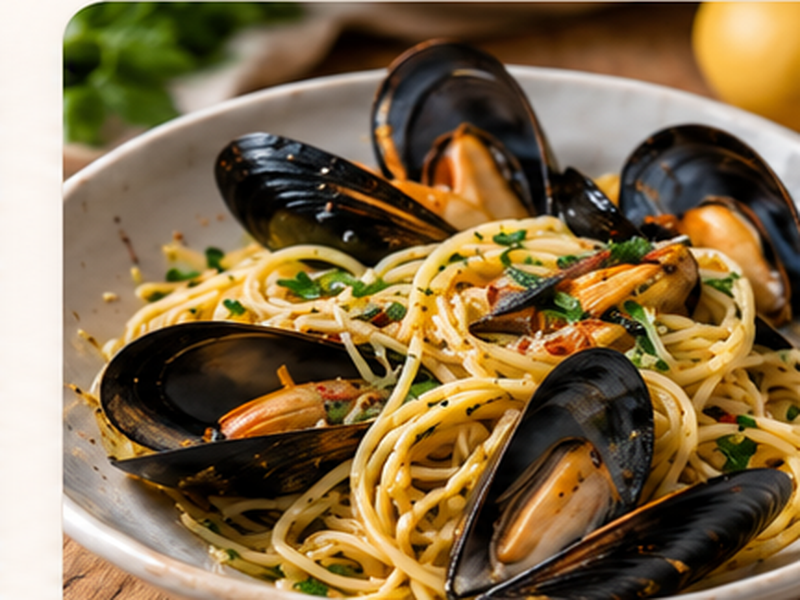

COOKING GUIDE
Seafood & Fish Guide
A practical reference for choosing fish and shellfish, understanding their textures, preparing them correctly, matching each type to the right cooking method, and avoiding overcooking.

From: Lemon-Stuffed Grilled BranzinoFIRST PRINCIPLE
Cook to the fish, not just the recipe.
Lean delicate fish, rich oily fish, firm steak-like fish, crustaceans, and mollusks behave differently under heat. Thickness matters as much as species. Seafood generally cooks quickly, so preparation should be complete before it reaches the pan, grill, or oven.
Types of Fish
Lean White Fish
Examples: cod, haddock, pollock, sole, flounder, snapper.
Mild and relatively low in fat. Delicate fillets suit baking, poaching, steaming, shallow frying, and gentle pan-searing.
Rich / Oily Fish
Examples: salmon, trout, mackerel, sardines.
Higher natural fat gives richer flavor and more tolerance for high heat. Excellent roasted, grilled, broiled, or pan-seared.
Firm, Meaty Fish
Examples: swordfish, tuna, mahi-mahi, halibut.
Dense flesh holds together well on a grill or in a skillet. Treat thick portions much like a steak while avoiding unnecessary overcooking.
Whole Fish
Examples: branzino, snapper, trout, sea bass.
Cooking on the bone protects moisture. Roast or grill whole after scaling, gutting, and drying thoroughly.

Fish Cuts & Portions
Fillet: boneless side cut. Steak: cross-cut through a larger fish, usually containing bone. Loin: thick uniform portion from large fish. Whole: intact fish, normally scaled and gutted. Butterflied: opened into two connected sides for even cooking.
From: Herb-Crusted SalmonShellfish
Crustaceans
Shrimp & prawns: sauté, grill, broil, fry, or poach just until opaque and firm.
Lobster & crab: sweet delicate meat suited to steaming, boiling, roasting, or gentle finishing in butter or sauce.
Bivalves
Mussels, clams & oysters: cook quickly. Steam mussels and clams only until shells open; discard shellfish that remain closed after cooking.
Scallops
Dry thoroughly and use a hot pan for a browned exterior while keeping the center tender. Wet-packed scallops can release excess liquid and resist browning.
Cephalopods
Squid & octopus: are best cooked either very quickly or long enough to tenderize. Intermediate cooking commonly produces a rubbery texture.

Buying & Freshness
Fresh fish should smell clean and mild, not strongly fishy or ammonia-like. Flesh should look moist and resilient. Whole fish should have clear eyes and bright-looking gills. Keep seafood very cold and use promptly.
From: Cajun Garlic Butter ShrimpChoosing the Cooking Method
| Seafood | Best methods | Key consideration |
|---|---|---|
| Thin white fillets | Pan-sear, bake, poach, steam | Gentle handling; very short cooking time |
| Salmon & trout | Roast, grill, broil, pan-sear | Natural fat tolerates stronger heat |
| Swordfish & tuna | Grill, pan-sear | Firm texture; avoid drying thick steaks |
| Whole fish | Roast, grill | Check doneness near backbone |
| Shrimp | Sauté, grill, broil, poach | Remove from heat promptly |
| Scallops | Hard sear | Dry surface and uncrowded hot pan |
| Mussels & clams | Steam | Cook only until shells open |
| Squid | Very fast sear/fry or long braise | Avoid intermediate cooking times |

Grilling & Searing
Dry seafood thoroughly before high-heat cooking. Oil the fish rather than flooding the pan or grill. Leave it undisturbed long enough to develop a crust before turning. A fish spatula helps support delicate fillets.
From: Swordfish Sicilian-StyleDoneness & Temperature
Fish changes from translucent to increasingly opaque as proteins set. For food-safety guidance, USDA recommends cooking fin fish to 145°F / 63°C, or until flesh is no longer translucent and separates readily with a fork. Shrimp, lobster, crab, and scallops should become pearly/white and opaque; clams, mussels, and oysters should open during cooking.
Preparation Fundamentals
Dry Before Browning
Surface moisture creates steam. Pat fish and scallops dry before pan-searing or grilling.
Salt With Timing in Mind
Season shortly before cooking unless the recipe intentionally uses a cure or dry brine.
Acid Is Powerful
Lemon, lime, and vinegar brighten seafood, but prolonged acid exposure changes raw fish proteins.
Don't Crowd the Pan
Space lets moisture escape. Crowded shrimp, scallops, or fish steam instead of browning.

Mussels & Clams
Scrub shells and remove mussel beards where necessary. Discard broken shells and live shellfish that remain open when tapped. Steam in a covered pot with flavorful liquid and check early.
From: Spaghetti with MusselsCommon Problems & Fixes
Fish sticks to the pan
Dry it, preheat the cooking surface, use sufficient fat, and wait for the crust to release naturally before turning.
Fish falls apart
Use a wide fish spatula, minimize flipping, and select firmer species for vigorous cooking methods.
Rubbery shrimp or scallops
They were likely cooked too long. High heat and short cooking generally produce a better texture.
Watery scallops
Pat thoroughly dry, avoid crowding, and choose dry-packed scallops when possible.
Seafood Recipes at The Kitchen Table
Herb-Crusted Salmon → · Lemon-Stuffed Grilled Branzino → · Swordfish Sicilian-Style → · Cajun Garlic Butter Shrimp → · Spaghetti with Mussels → · Creamy Seafood Risotto →